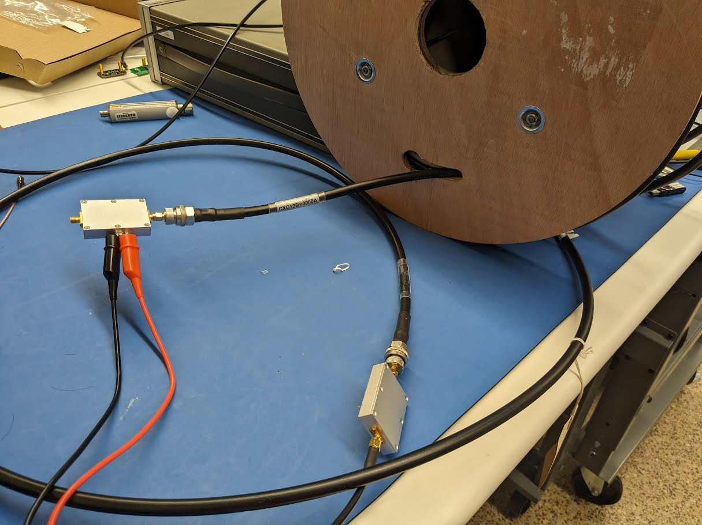
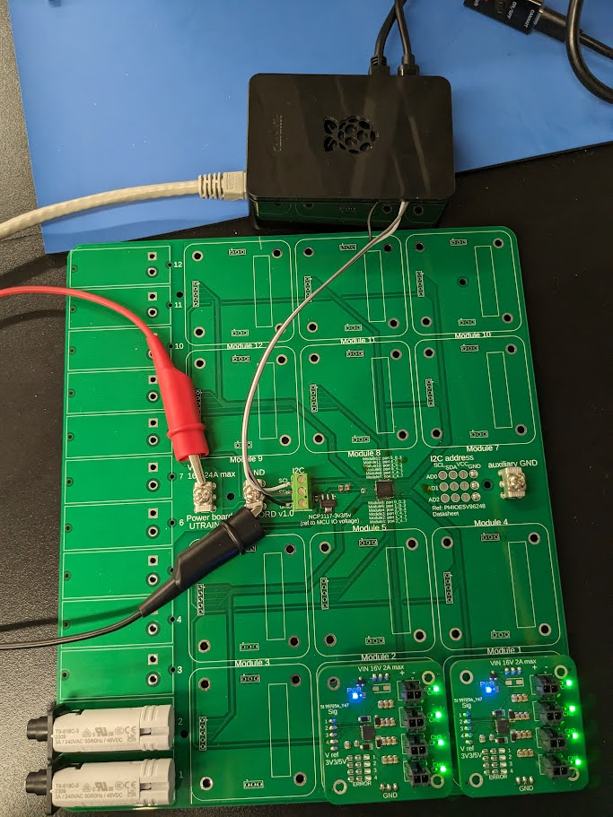
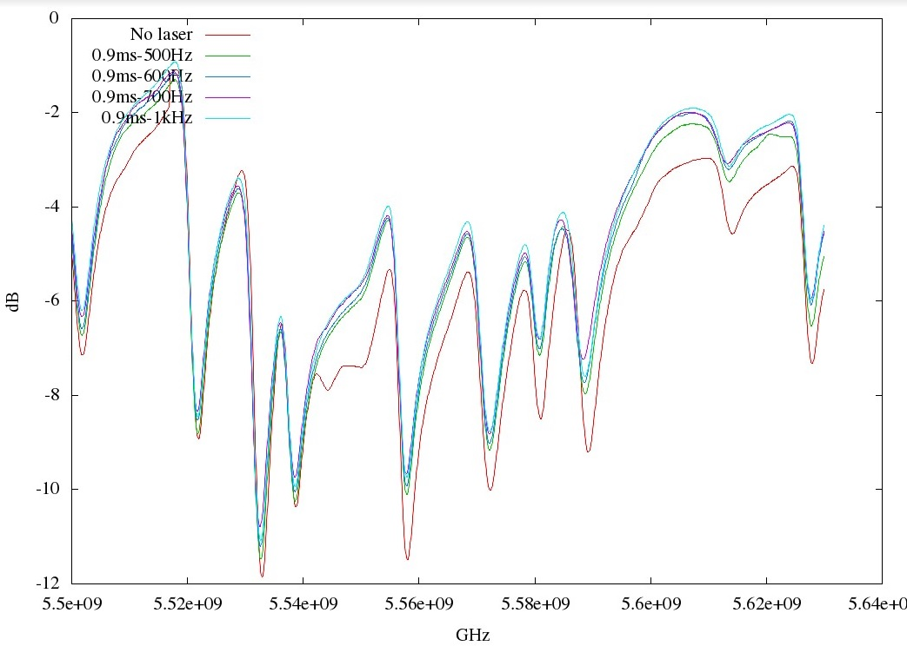
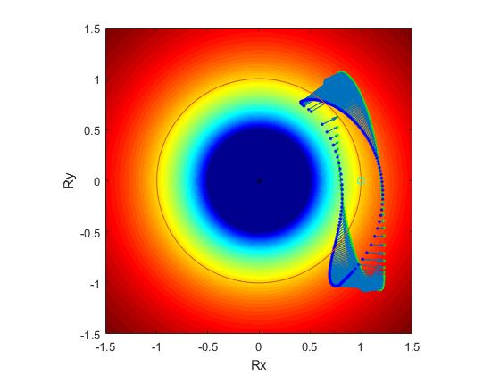

I am enthusiastic about instrument development for both optical and radio astronomy. I believe that some technologies in optical astronomy can be made useful in radio astronomy and vice versa.
I am also interested in astrophysical and cosmological observations and experiments, especially of transient events.
The Canadian Hydrogen Observatory and Radio-transient Detector (CHORD)
CHORD is a next-generation radio telescope currently under development and construction by pan-Canadian astronomers, together with international collaborators.
Designed as an ultra-wideband (300–1500 MHz), "large-N, small-D" telescope with VLBI outrigger stations, CHORD's primary goals include advanced cosmological and astrophysical measurements and the study of radio transients.
I am developing the analog signal chain and the analog power distribution circuit for the CHORD array together with students.
A prototype of the analog signal chain, with amplifiers, transmission cables and analog filters:

A prototype of the power distribution system that powers the amplifiers:

Developing a low-cost, differential analog solution with Radio-over-Fiber (RFoF) for radio telescope arrays
Optical fibers, with their immunity to electromagnetic interference, can offer long-range signal transmission for radio telescopes in place of coaxial cables.
We propose a novel, economical approach that adapts commercial digital Small Form-factor Pluggable (SFP) modules for analog Radio-over-Fiber (RFoF) use.
By repurposing these modules with tailored analog circuits, we can transmit RF signals up to several gigahertz.
Initial tests with a 3 m LC fiber achieved flat, low-loss transmission for bands greater than 2 GHz.
The Ultra-Fast Astronomy Project: Single Photon Imager for Nanosecond Astrophysics (SPINA)
In the Ultra-Fast Astronomy (UFA) program led by Prof. George F. Smoot, we aim to survey the optical night sky on millisecond and shorter time scales, where we expect to see transients or variability from astronomical targets.
We designed a position-sensitive silicon photomultiplier (PS-SiPM) based single-photon imager, which we call the Single Photon Imager for Nanosecond Astrophysics (SPINA). When a photon is detected by the PS-SiPM, a photo-electron is generated and amplified into an electric pulse, which is then distributed among the four anodes of the sensor. The SPINA readout system captures their pulse heights and interprets them as a time series of positions and pulse strengths with 8 ns timing accuracy. We can then turn this photon data stream into ultra-fast light curves of astronomical objects.
I designed and developed the electronic system, cooling system and mechanical mounting of the SPINA system as my Ph.D. thesis project.
PS-SiPM readout electronic system
Reading out the high-speed analog pulses from the PS-SiPM detector is one of the challenges of the SPINA system, especially as we wanted to do it simply, cost-efficiently and on a single electronic board.
After some testing and experiments, we found that commercial Analog Front-Ends (AFEs) developed for medical ultrasound work well as a readout for SiPM systems.
The AFE5818 from Texas Instruments supports 16-channel readout with 54 dB low-noise amplification, on-chip tunable filters and a 14-bit, 65 MSPS ADC.
We designed our readout system around the AFE5818 and a Field Programmable Gate Array Multiprocessor System-on-Chip (FPGA MPSoC).
This readout system successfully captures the signal from our PS-SiPM and performs real-time processing to decode the position of each event.
The readout system also generates the bias voltage that drives the PS-SiPM, with individually tunable channels.
Observatory visit
We installed the SPINA system on the Nazarbayev University Transient Telescope at the Assy-Turgen Astrophysical Observatory (NUTTelA-TAO) for its first on-sky tests in July 2022. Here is a timelapse video of us installing and testing the SPINA system.

MKIDs readout system development
I also participated in designing and programming readout systems for MKIDs in the Energetic Cosmos Laboratory (ECL).
Currently, we are testing a few different systems, including the ROACH2 board from minicom electronics, and designing a readout system based on an I/Q modulator-demodulator and an FPGA board with GHz ADCs/DACs.
2D Luminescence Microscopic Imaging System development
I joined Prof. KS Wong's laboratory for my undergraduate final year project. I developed the optics, electronics and firmware of a laser-excited scanning confocal microscope for material characterization. The system is still in use and being upgraded.

Space Orbit Design
This was my first research project during my undergraduate studies, where we developed a fast algorithm for estimating the reachability of low-thrust spacecraft. We built an O(N·k) algorithm, compared to the traditional O(Nk) cost. The results were presented at the IAC 2017 conference.
Get in touch
Please feel free to contact me through the following links.